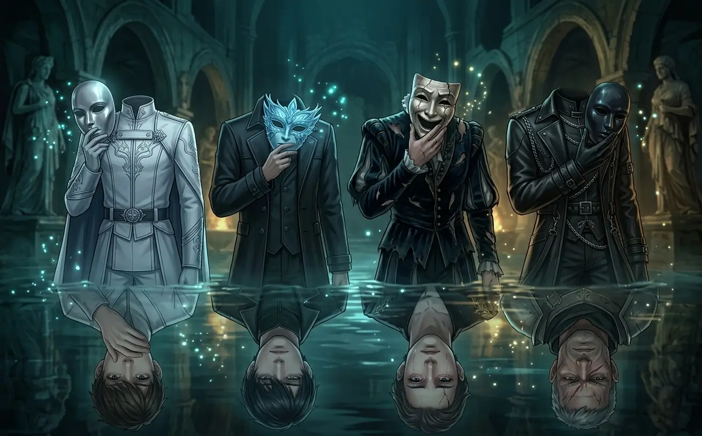
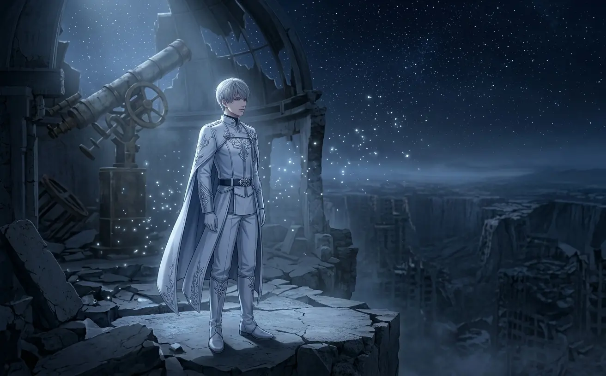
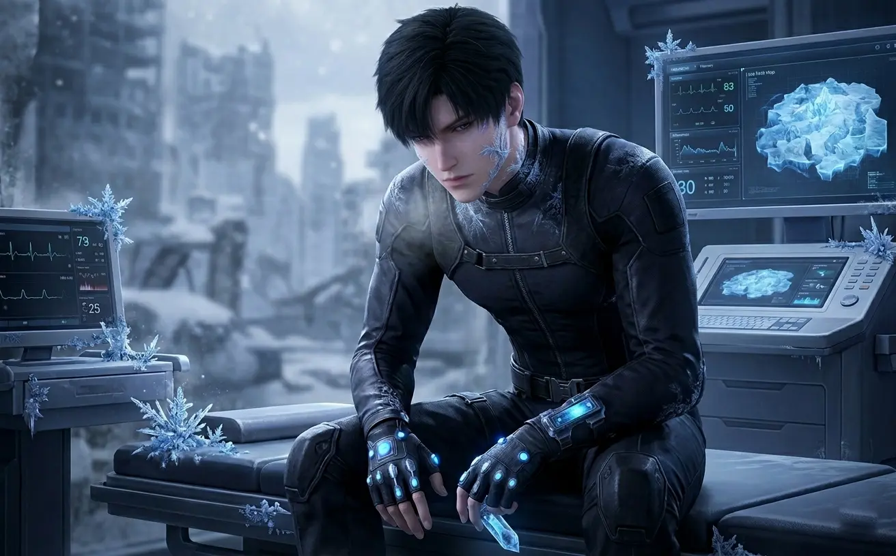
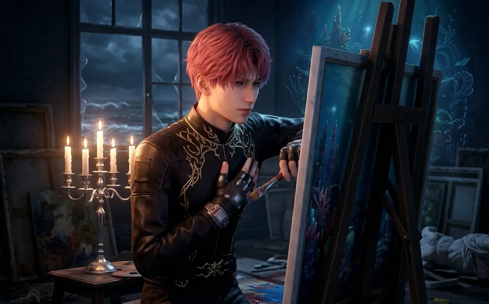
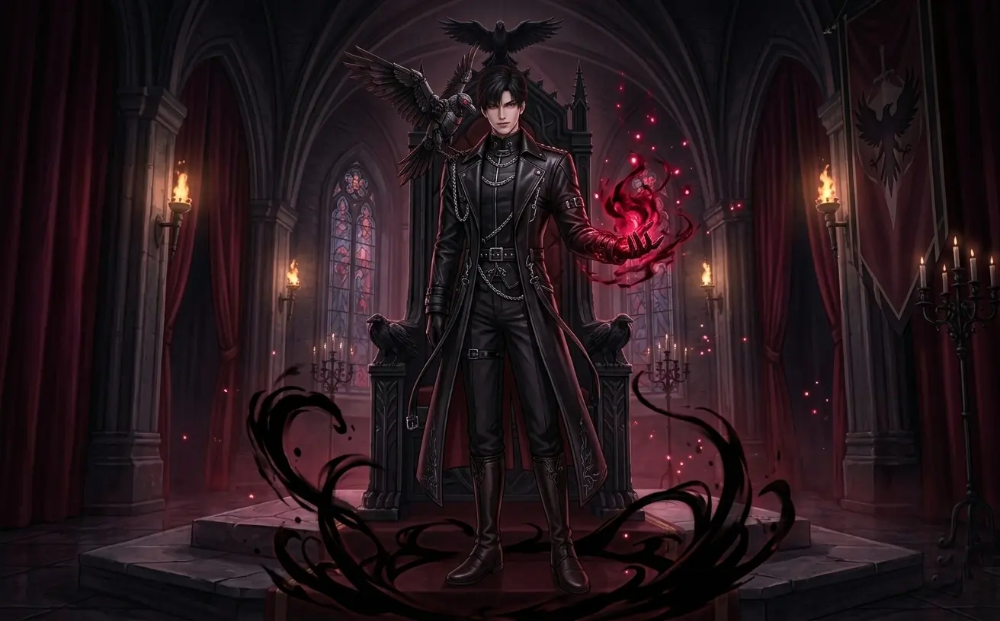
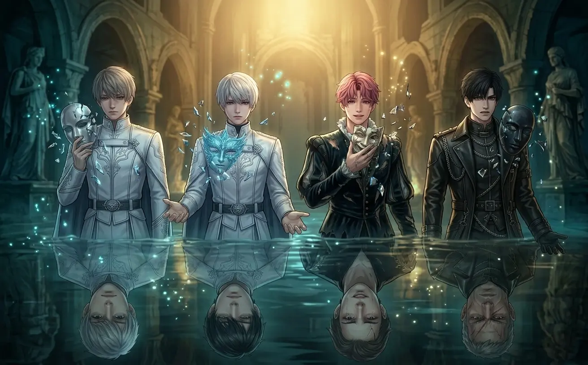

Xavier's silence. Zayne's walls. Rafayel's performance. Sylus's armor. Who hides the deepest?
Everyone in Love and Deepspace is hiding something.
That's not a criticism — it's the point. The game is built around secrets. Lost kingdoms. Forgotten pasts. Powers that can't be explained. But the most carefully guarded secrets aren't about lore or abilities. They're about vulnerability.
Xavier hides behind silence. Zayne hides behind professionalism. Rafayel hides behind performance. Sylus hides behind intimidation. Each man has constructed an elaborate facade designed to keep the world — and especially the protagonist — at a safe distance.
But here's the question that kept me up at night: who hides the deepest?
Who has built the tallest walls? Who is most afraid of being truly seen? Whose mask is the heaviest to wear?
I spent weeks replaying scenes, cataloging dialogue, and comparing moments of near-breakthrough. This is what I found.

Four men. Four masks. One question: who are they really?
Xavier is quiet. That's the first thing everyone notices. He doesn't talk much. He doesn't explain himself. He answers questions with questions, or with silence, or with a gentle smile that reveals nothing.
At first, I thought he was boring.
Then I started paying attention to what he doesn't say.
Xavier's public persona is soft. Approachable. A little sleepy. He naps in strange places. He forgets appointments. He seems, frankly, a bit disengaged from the world around him.
This is a lie.
Xavier is hyper-aware of everything. He notices details no one else catches. He remembers things from decades ago. His disengagement is deliberate — a way of lowering expectations so no one asks too much of him.
Xavier has lived for over two hundred years. He has watched civilizations rise and fall. He has outlived everyone he ever knew. He carries the memory of a dying world — Philos — and the guilt of surviving when others didn't.
That weight doesn't disappear just because he smiles.
What he hides: The depth of his loneliness. The fear that he doesn't belong in this time, with these people. The terror of loving someone who will grow old and die while he remains.
When the mask slips: Rarely. Almost never. But when it does — in the quiet moments after a battle, when he thinks no one is watching — his eyes look ancient. And tired. And so, so sad.

Xavier's silence isn't emptiness — it's a shield.
Zayne is the adult in the room. The responsible one. The professional. He's a world-class surgeon with a flawless reputation and an emotional distance that could freeze water.
He's also drowning.
Zayne treats everyone like a patient. He's calm. Measured. Never raises his voice. Never loses control. He explains medical facts with the same tone he uses to discuss dinner plans.
This is armor. Every healer knows: you can't save anyone if you let yourself feel everything.
Zayne's Evol is ice — and it's slowly killing him. Every time he uses his power, he risks freezing himself from the inside. He knows this. He does it anyway. Because the alternative — letting someone die when he could have saved them — is worse than any personal cost.
He doesn't tell anyone this. Of course he doesn't.
What he hides: The physical toll of his Evol. The fear that one day he won't be able to save someone. The guilt of every patient he couldn't help. The loneliness of being the healer that no one thinks needs healing.
When the mask slips: When he's exhausted. When he thinks the MC is asleep. When his hands shake and he pretends they don't.

The healer's greatest fear? Being the one who needs saving.
Rafayel is exhausting. That's by design.
He complains. He whines. He makes everything about himself. He's dramatic, demanding, and delightfully annoying. Most players dismiss him within the first few hours. That's exactly what he wants.
Rafayel has constructed the most elaborate persona of all four leads. He's not just hiding — he's performing. Every eye roll, every dramatic sigh, every complaint about sand in his shoes is a deliberate choice designed to make people look away.
Because if you're annoyed, you're not looking closely. And if you're not looking closely, you won't see the cracks.
Rafayel is the last prince of Lemuria. His kingdom didn't fall — it drowned. He watched his people die. He watched his home sink beneath the waves. And then he walked onto shore, alone, and pretended none of it had ever happened.
For a thousand years, he's been pretending.
What he hides: The grief of losing his entire civilization. The terror of being truly seen. The exhaustion of performing happiness every single day for a thousand years. The hope that someone — the MC — will look past the performance and see him anyway.
When the mask slips: When he thinks no one is watching. When he's painting the same face, over and over. When he says something sincere and immediately deflects with a joke.

The performance is exhausting. But stopping means facing what's underneath.
Sylus is terrifying. That's the point.
He's the leader of Onychinus, the most powerful criminal organization in the N109 Zone. He doesn't ask — he commands. He doesn't explain — he expects. His presence alone is enough to make most people freeze.
But here's the thing about armor: it's heavy.
Sylus has built a reputation so fearsome that no one would dare challenge him. He leans into it. He cultivates it. He becomes the monster people expect him to be because that's easier than explaining why he's not.
But monsters don't have mechanical crows that represent their dead selves. Monsters don't have hidden dialogues where they admit they're lonely.
"Mephisto isn't just a bird. He's the part of me that died a long time ago. Still watching. Still waiting for a reason to come back."
This single line changes everything about Sylus. He's not a monster. He's a man who killed the soft parts of himself to survive — and kept a piece of them anyway, in the form of a crow, hoping someone would prove him wrong.
What he hides: The hope that someone will see through the armor. The fear that no one ever will. The vulnerability he's buried so deep he almost believes it's gone.
When the mask slips: When he talks to Mephisto. When he thinks the MC isn't listening. When he says something honest and immediately retreats behind a threat.

The villain's mask is the heaviest. But even iron rusts.
| Character | Mask Type | What They Hide | Crack Frequency | Hidden Depth |
|---|---|---|---|---|
| ✨ Xavier | Silence / Indifference | Centuries of loneliness | Very Rare | 65% |
| ❄️ Zayne | Professional Detachment | Physical toll, survivor's guilt | Rare | 70% |
| 🌑 Sylus | Villain / Intimidation | Dead self, desperate hope | Very Rare (but devastating) | 75% |
| 🔥 Rafayel | Performance / Brat | Millennium of grief | Often (but quickly hidden) | 85% |
It's important to note: "hides the deepest" doesn't mean "suffers the most." All four men are carrying unbearable weights. The difference is in how they cope.
Xavier withdraws. Zayne deflects. Sylus intimidates. Rafayel performs. Each strategy is valid. Each strategy is heartbreaking in its own way.
But Rafayel's mask requires the most energy to maintain. He can't afford to slip — because if he stops performing, he has to face what's underneath. And what's underneath is a millennium of grief that he's never fully processed.
Here's what I've come to believe after all this analysis.
The masks these men wear aren't deceptions. They're survival mechanisms. Each one developed their persona because the alternative — showing vulnerability in a world that punishes weakness — was too dangerous.
Xavier learned that caring means losing. Zayne learned that healers can't be weak. Sylus learned that kindness is exploited. Rafayel learned that the only safe performance is one that makes people turn away.
And then the MC arrived — and refused to look away.
That's the real story of Love and Deepspace. Not romance. Not combat. Not even the lore, really. It's the story of four men who built elaborate masks to protect themselves — and the one woman who patiently, stubbornly, lovingly refused to be fooled by any of them.
If I have to choose: Rafayel.
His mask is the most active. The most performative. The most exhausting to maintain. Xavier can hide in silence. Zayne can hide behind professionalism. Sylus can hide behind fear. But Rafayel has to perform every single day — and has been doing so for a thousand years.
That kind of performance doesn't just hide pain. It becomes pain.
But here's the truth: they're all hiding. They're all scared. They're all desperate for someone to see through the mask — and terrified of what happens if someone actually does.
"I don't need you to save me. I just need you to stay."
— Rafayel, speaking for all of them

Four masks. Four truths. One woman who refuses to look away.